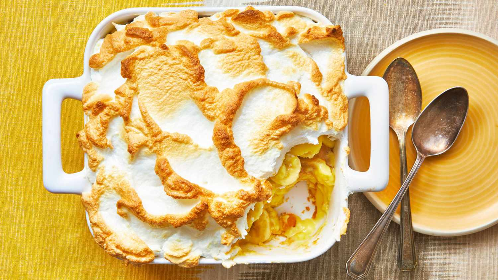

Simple Banana Pudding

Photo: Complete Product after following the recipe
Banana Pudding Ingredients
- 1 (8 ounce) package cream cheese, at room temperature
- 1 (14 ounce) can sweetened condensed milk
- 1 (5 ounce) package instant vanilla pudding mix
- 3 cups cold skim milk
- 1 teaspoon vanilla extract
- 1 (8 ounce) container frozen whipped topping, thawed
- 1/2 (12 ounce) package vanilla wafers
- 4 bananas, slices
Directions
- Gather all ingredients.
- Beat cream cheese in a large bowl until fluffy. Bet in condensed milk, then pudding
mix. Gradually mix in cold milk until smooth, followed by vanilla.
- Fold in 1/2 of the whipped topping.
- Line the bottom of a 9x13-inch dish with vanilla wafers.
- Arrange sliced bananas evenly on top.
- Cover with pudding mixture.
- Top with remaining whipped topping.
- Cover and chill in the refrigerator for at least 3 hours before serving.